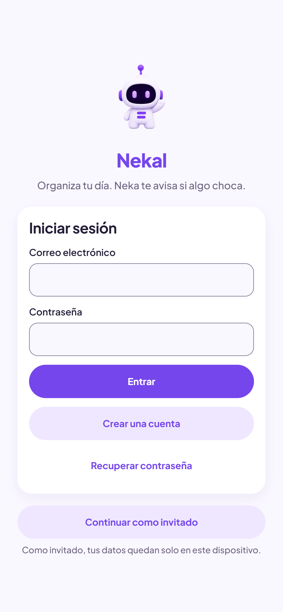
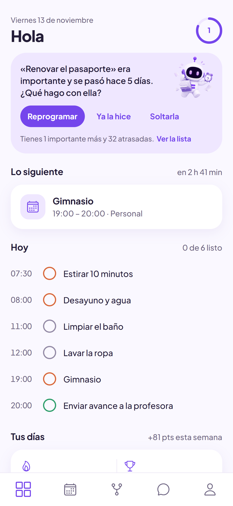
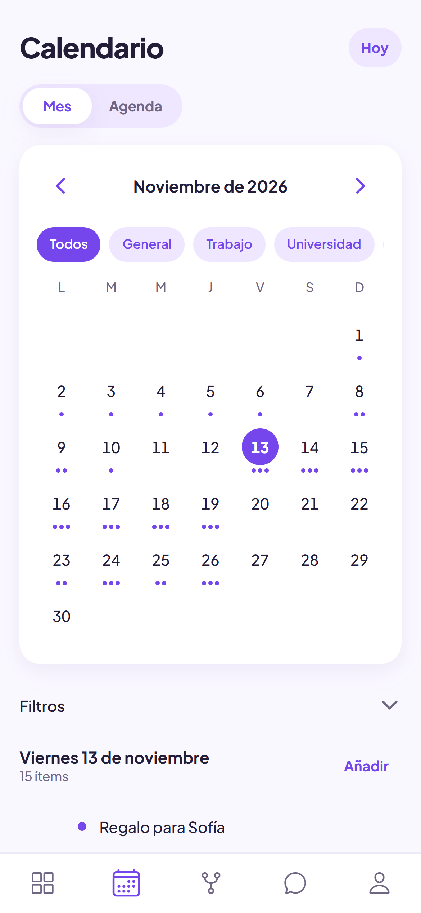
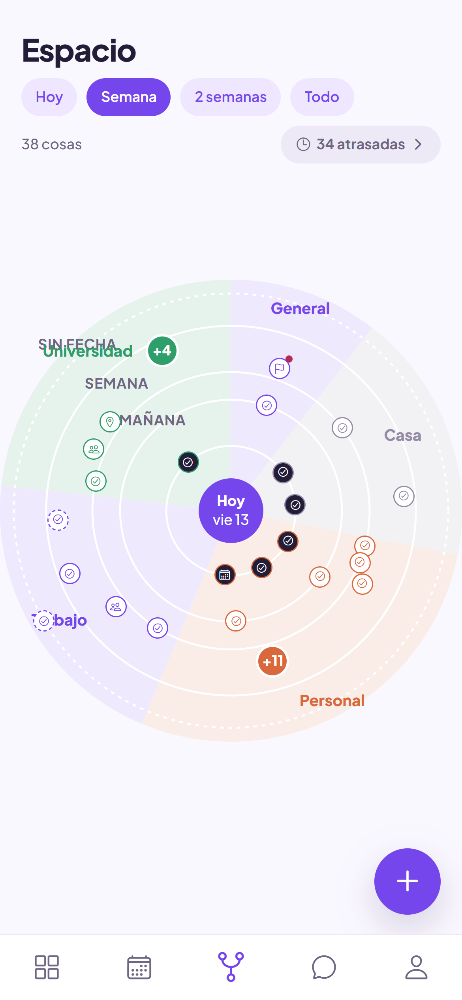
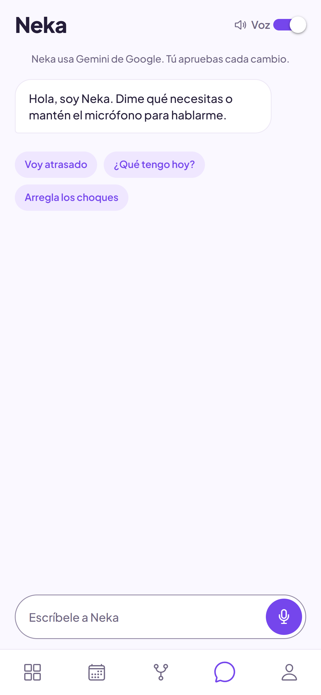
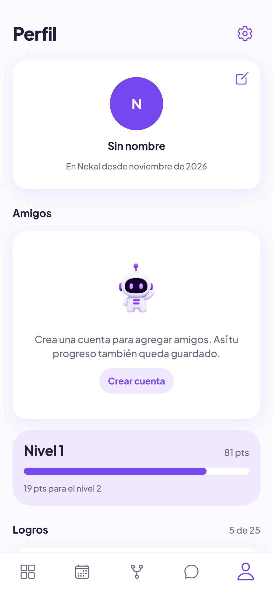
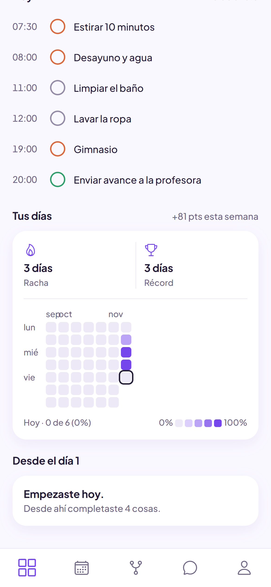
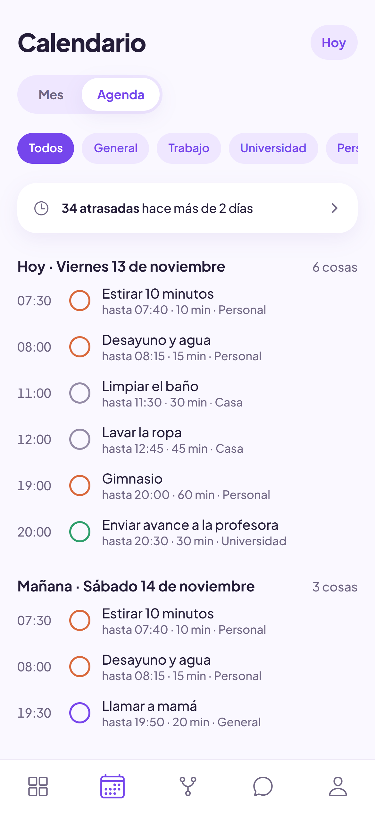
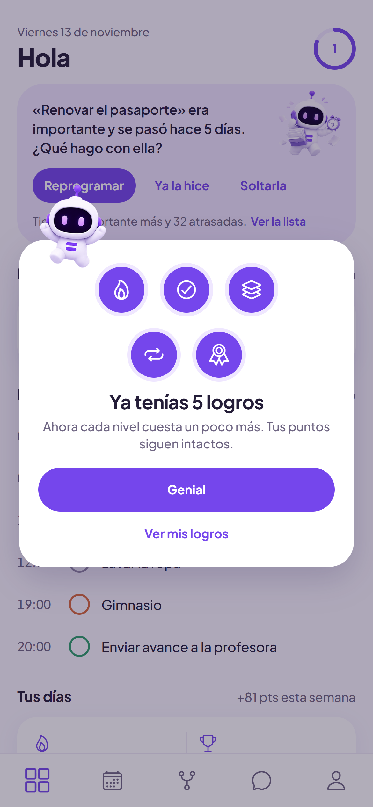
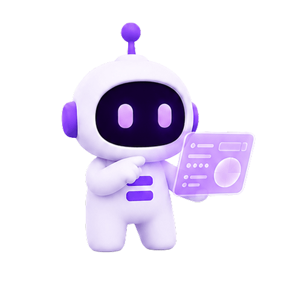

Nekal
Un planificador personal que negocia contigo cuando tus planes cambian. REVISAR
Nicolás Arancibia de Groote
Proyecto de Título 2026 · Diseño de Interacción Digital
Facultad de Diseño, Universidad del Desarrollo
Profesores guía: Mauricio Reyes y Alex Hurtado

Parte 1 de 5
El problema
Qué pasa cuando los planes cambian, y qué dice la evidencia.
Cada interrupción tiene un costo medible: tiempo y estrés.
Reorientar la atención obliga a reconstruir el contexto de lo que se estaba haciendo.
Gloria Mark, Attention Span (2023)
El problema tiene nombre
Asimetría de planificación
Las personas reorganizan su planificación todo el tiempo, por cambios que vienen de distintos ámbitos de su vida. Las herramientas no las acompañan en ese proceso.
El cambio llega de afuera. El reajuste se hace a mano.
Los planes cambian todo el tiempo
Un plazo que se adelanta, una reunión nueva, una clase que se mueve. Vienen de distintos ámbitos de la vida.
Dejan a la persona redistribuir sola
Tareas, prioridades y tiempos se mueven uno por uno. Ninguna apoya ese proceso de manera integrada.
85,4%
modifica su planificación al menos una vez por semana.
54,2 % lo hace a diario o varias veces por semana
Encuesta exploratoria propia, Nekal 2026 (n = 48)
Las herramientas se conocen, pero no duran.
81,3%
ha usado alguna herramienta digital de organización.
39,6%
la sigue usando.
Encuesta exploratoria propia, Nekal 2026 (n = 48)
62,5%
reorganiza a mano todo lo demás cuando aparece una obligación que no se puede mover.
Encuesta exploratoria propia, Nekal 2026 (n = 48)
72,9%
aceptaría que una herramienta digital intervenga para ayudar a reorganizar, manteniendo la decisión final.
Encuesta exploratoria propia, Nekal 2026 (n = 48)
Y las apps de productividad se abandonan rápido.
82%
las abandona en la primera semana.
93%
las abandona en el primer mes.
De Luna et al., KTH Royal Institute of Technology (2025)
Cambiar los planes no es la excepción. Es lo normal.
El desafío no es registrar: es mantener vigente la planificación cuando las condiciones cambian.
Cinco ideas sostienen el proyecto
Carga cognitiva
La memoria de trabajo es limitada. Demasiada información dificulta decidir.
Sweller, 2019
Autorregulación
Pensamientos y conductas que la propia persona genera para lograr sus objetivos.
Zimmerman, 2002
Gestión personal de información
Crear, guardar, organizar y mantener información para cumplir objetivos.
Jones, 2008
Mente extendida
La mente funciona en colaboración con recursos externos.
Clark, 1997
Gamificación
Elementos de juego en contextos que no son juego.
Deterding et al., 2011
Siempre hemos sacado la memoria fuera de la cabeza
3500 a. C.
Escritura cuneiforme
700 d. C.
El cero
1450
Quipu inca
1800–1995
Archivos físicos
1995
Agendas electrónicas
Hoy
Apps
Qué hacen bien las herramientas de hoy, y qué les falta
| Referente | A favor | En contra |
|---|---|---|
| Notion | Flexible, centraliza todo | Mucho mantenimiento manual; no detecta ni negocia choques |
| Todoist | Simple y rápida, buenos recordatorios | Binaria (hecho / no hecho); lo atrasado se acumula |
| Google Calendar | Muestra bien el tiempo comprometido | No ayuda a gestionar; no detecta ni negocia choques |
| Motion, Reclaim AI, Sunsama | Automatizan y sugieren bloques | Optimizan y ejecutan; no negocian con la persona |
El vacío
Nadie media la negociación entre la persona y sus estructuras externas dejando la decisión final en la persona.
Parte 2 de 5
La propuesta
La pregunta, los objetivos, para quién se diseña y con qué principios.
Pregunta de investigación
¿Qué atributos debe tener un sistema planificador que medie en la negociación entre las personas y los contextos temporales a los que pertenecen, para mitigar las asimetrías de planificación?
Objetivo general
Diseñar un sistema planificador negociador con recursos mnemotécnicos, mediante IA y mecánicas de gamificación.
Dirigido a personas con dificultades de organización, para conciliar de forma más simétrica sus objetivos personales con los de las estructuras organizacionales.
Cuatro objetivos específicos
Identificar
Patrones de conducta y quiebres en la planificación, con encuesta y entrevistas.
Definir
Las funciones del sistema mnemotécnico y gamificado, desde los referentes y el marco teórico.
Diseñar
La información y el prototipo navegable, con metodología centrada en el usuario.
Evaluar
La propuesta con usuarios reales: pruebas de usabilidad e iteración.
No decide, solo reacciona.
Usuario principal: estudiante universitario. Su calendario lo fija la institución.
Tres perfiles, una misma situación
Estudiante universitario
Reorganiza la semana cada vez que choca con un plazo no negociable.
«No decide, solo reacciona.»
Trabajador
Reuniones, turnos y entregas predefinidos.
«Ajustarse le sale más barato que reclamar.»
Cualquier persona con compromisos externos
No depende de una ocupación: depende de estructuras que no controla.
«Un cambio nunca llega solo.»

Organiza tu día. Neka te avisa si algo choca.
- Anotas lo que tienes que hacer.
- La app lo ordena en el tiempo.
- Neka te avisa si algo choca y te propone cómo arreglarlo.
Tú siempre confirmas antes de que algo cambie.
Cuatro principios de diseño REVISAR
Neka propone, tú decides
Nada cambia sin tu sí.
Lo fijo no se mueve
Una clase, una visita. Lo flexible, solo con tu aprobación.
Nada se borra solo
Neka pregunta por una cosa importante atrasada a la vez.
Lo que ves es lo que se aplica
La propuesta que revisas es exactamente la que queda.

Parte 3 de 5
La app
Un recorrido por las pantallas reales, el video y una demostración en vivo.
Cinco partes






Resumen
- Qué viene ahora y qué falta hoy.
- Tu racha y el mapa de tus días.
Menos búsqueda manual

Calendario
- Todo lo que tiene fecha, por mes o como agenda.
- Marca los choques y ofrece «Arreglar con Neka».
Ver el conflicto antes del atraso
Espacio
- Tus cosas en mesas: Casa, Trabajo, Universidad.
- Alrededor de «hoy», en un círculo del tiempo: hoy, mañana, la semana, sin fecha.
Saca la planificación de la cabeza
Neka
- Le hablas por texto o por voz.
- «Voy atrasado 20 minutos» y propone un plan dibujado en el día.
- Aceptar o Descartar.
Menos esfuerzo de calcular cada reajuste

Perfil
- Nivel, 25 logros y rating por mesa.
- Amigos, con su perfil en corto.
Motivación para mantener el hábito
FALTA
Video (2:00)
Aquí va la pieza audiovisual que pide la universidad: máximo 2 minutos, con portada que identifique el proyecto y su autor.
Para ponerlo: guarda el archivo como 02_PRESENTACION/media/video.mp4. Aparece solo en esta diapositiva.
Demo en vivo
- El día en Resumen y el círculo del Espacio.
- Un choque en el Calendario: «Arreglar con Neka».
- «Voy atrasado 20 minutos»: plan, Aceptar.
REVISAR Este recorrido es una propuesta. Plan B si falla internet o el proyector: seguir con las pantallas de las diapositivas anteriores.

Cómo negocia Neka
Pides o cambia algo
Por texto, por voz o desde un choque en el Calendario.
Neka lee tu agenda
Qué es fijo, qué es flexible, cuánto dura, tu jornada.
Arma un plan
Mueve solo lo flexible y salta lo fijo.
El plan se revisa solo
No puede crear choques nuevos. Si la agenda cambió, avisa y se pide de nuevo.
Tú decides
Aceptar o Descartar, viendo el día dibujado.
Se aplica y queda guardado
Sincronizado en tu cuenta.
Pantallazo del «Plan de Neka»: el día dibujado con Aceptar y Descartar
La pantalla del proyecto
- El plan se ve dibujado sobre tu día, antes de aplicarse.
- Dos botones: Aceptar o Descartar.
Neka propone, tú decides
Parte 4 de 5
El proceso
Qué cambió desde el anteproyecto, por qué, y cómo se validó con usuarios.
De la exploración a una app real
FALTA fecha
V0
Exploración.
FALTA fecha
V1
Primera app publicada en la web.
Octubre–noviembre 2026
V2
Por fases: sistema de diseño, Espacio (tres vistas probadas), Neka con IA, gamificación, amigos y estabilización.
De tres agentes a una sola asistente REVISAR
Sistema multiagente
Tres IA: planificador, revisor y monitor.
Neka, con revisión por código
Una asistente que propone y reglas que revisan cada plan.
Por qué: es más simple de entender y más confiable. El revisor ya no es otra IA: son reglas que no fallan.
De bloques y 3D al círculo del tiempo REVISAR
Bloques para arrastrar, mesas en 3D y un plano
La vista 3D y el plano no se leían bien en el iPhone.
Círculo del tiempo
Responde «qué tengo y cuándo» de un vistazo.
Por qué: se probaron tres vistas (Tiempo, Mesas 3D y Plano) y quedó la que se entendía en un teléfono.
Otros cambios desde el anteproyecto REVISAR
| Anteproyecto | Hoy | Por qué |
|---|---|---|
| Prototipo navegable de 6 pantallas | App real: cuentas, datos en la nube, web publicada e iPhone | Se decidió que todo fuera real y no pantallas de muestra |
| Perfil con reglas personales de equilibrio | Perfil de progreso; la jornada se define en Ajustes | FALTA la razón, en palabras de Nicolás |
| No existía | Lo atrasado como regla propia; Neka pregunta | Responde a la crítica a Todoist: lo atrasado no se acumula |
| No existía | Amigos, con código de 6 caracteres | Es parte de la gamificación |
Con qué está hecha
Una sola base para web e iPhone
Expo y React Native, con TypeScript.
Cuentas, datos y alojamiento
Firebase. Hoy corre en su plan gratuito.
La IA de Neka
Gemini Flash-Lite, por Firebase AI Logic. También en plan gratuito.
Más de 330 pruebas automáticas cuidan la lógica. Web publicada: nekal-973b2.web.app
Cómo se probó con usuarios FALTA
Qué va aquí
- Quiénes participaron y cuántos fueron.
- Qué tareas se les pidió hacer en la app.
- Cómo se hizo: dónde, con qué versión, cómo se registró.
- Una foto o captura de las sesiones.
Por qué importa: es el objetivo específico 4 y la pauta lo evalúa directo («involucra al usuario en desarrollo, prototipado y validación»).
Qué se encontró y qué cambió FALTA
Qué va aquí
- Dos o tres hallazgos, cada uno con su número o su cita textual.
- Qué se cambió en la app por cada hallazgo (antes y después).
- Qué quedó pendiente.
Sugerencia de formato: una diapositiva «cifra grande» por hallazgo y una «comparación» por cada cambio.
Parte 5 de 5
El proyecto en el mundo
Cuánto cuesta, qué impacto tiene y cómo sigue.
Planificación del trabajo FALTA
Qué va aquí
- La carta Gantt real de lo que se hizo, con fechas.
- Dónde hubo atrasos o cambios de plan, y cómo se resolvieron.
Lo que ya hay: las versiones V0, V1 y V2, y las fases de la V2 (sistema de diseño, Espacio, Neka con IA, gamificación, amigos, estabilización). Faltan las fechas de cada una.
Cuánto cuesta FALTA
Qué va aquí
- Honorarios: horas de diseño y de programación.
- Producción: servicios y herramientas.
- Gastos operacionales: cuánto cuesta mantenerla funcionando al mes.
- El total, como cifra grande.
Dato que ya hay: hoy corre en los planes gratuitos de Firebase y de Gemini.
Cómo se podría financiar FALTA
Qué va aquí
- Dos o tres fuentes de financiamiento posibles.
- Para cada una: qué cubre y qué pide a cambio.
- Si es viable y sostenible en el tiempo, y por qué.
La pauta pide: costos y posibles fuentes de financiamiento, viabilidad, factibilidad económica y sostenibilidad.
Impacto y variables éticas FALTA
Qué va aquí
- Datos personales: qué guarda la app, dónde, y quién los puede ver.
- La IA: qué lee Neka de tu agenda y qué no puede hacer sola.
- Impacto social esperado.
- Variables medioambientales y económicas, si aplican.
Lo que ya se puede decir: nada cambia sin que la persona acepte. Eso es una decisión ética de diseño, no solo de usabilidad.
Lo que viene FALTA ordenar
Google Calendar y Outlook
Conectar los calendarios que la persona ya usa. En curso.
Espacios compartidos
Planificar con amigos.
Neka por WhatsApp
Hablarle sin abrir la app.
Widget del iPhone
El día a la vista en la pantalla de inicio.
Resumen diario
Un aviso con lo que viene.
App nativa
Publicarla como aplicación instalable.
¿Qué atributos debe tener un planificador que medie en la negociación? FALTA
Qué va aquí
- La respuesta a la pregunta de investigación: los atributos, uno por uno.
- Qué resultado respalda cada atributo (validación con usuarios).
- Qué no se logró o queda abierto.
Punto de partida: los cuatro principios de diseño son candidatos a atributos, si la validación los respalda.
Gracias
Organiza tu día. Neka te avisa si algo choca.
nekal-973b2.web.app
Nicolás Arancibia de Groote · Proyecto de Título 2026
Para las preguntas
Respaldo
Glosario, detalle técnico, encuesta y referencias.
Glosario
- Reorganización de la planificaciónAjustar tareas, prioridades y tiempos cuando aparecen cambios.
- Estructuras temporales externasBloques de tiempo de actividades que no dependen de uno.
- NegociaciónConciliar compromisos, prioridades y necesidades personales cuando distintos ámbitos compiten por el mismo tiempo.
- Carga cognitiva de reorganizaciónEl esfuerzo mental de recordar pendientes, detectar conflictos, comparar prioridades y redistribuir actividades.
Ficha de la encuesta FALTA
Qué va aquí
- Fechas en que se aplicó y por qué medio.
- Quiénes respondieron: edades, ocupación.
- Las preguntas tal como se hicieron.
Lo que ya hay: encuesta exploratoria propia, Nekal 2026, con 48 respuestas.
Detalle: por qué un plan de Neka no crea choques
Lo fijo se salta
Una clase o una visita no se mueven nunca.
Solo se mueve lo flexible
Y solo si la persona lo aprueba.
Reglas, no otra IA
El plan se revisa solo: no puede crear choques nuevos.
Si la agenda cambió
Mientras esperabas, se avisa y se pide el plan de nuevo.
Lo que ves es lo que se aplica
La propuesta que aceptas es exactamente la que queda.
Queda guardado
Sincronizado en tu cuenta.
Detalle: las fases de la V2
| Fase | Qué se hizo |
|---|---|
| A | Sistema de diseño |
| B | Espacio: tres vistas probadas (Tiempo, Mesas 3D y Plano) |
| D | Neka con IA |
| E | Gamificación |
| F | Amigos |
| H | Estabilización (Neka sin choques, vistas simples) y conexión con Google Calendar, en curso |
Referencias
- Clark, A. (1997). Being there: Putting brain, body, and world together again. MIT Press.
- Cooper, A., Reimann, R., & Cronin, D. (2007). About face 3: The essentials of interaction design. Wiley.
- de Luna, S., Fredriksson, V., Påhlman, M., & Källsner, P. O. (2025). Boosting user retention through effective app onboarding. KTH Royal Institute of Technology.
- Deterding, S., Dixon, D., Khaled, R., & Nacke, L. E. (2011). From game design elements to gamefulness: Defining «gamification». ACM.
- Jones, W. (2008). Keeping found things found. Morgan Kaufmann.
- Mark, G. (2023). Attention span. Hanover Square Press.
- Norman, D. A. (2013). The design of everyday things. Basic Books.
- Sweller, J., van Merriënboer, J. J. G., & Paas, F. (2019). Cognitive architecture and instructional design: 20 years later. Educational Psychology Review, 31, 261–292.
- Zimmerman, B. J. (2002). Becoming a self-regulated learner: An overview. Theory Into Practice, 41(2), 64–70.
- Referentes digitales: Google Calendar, Notion, Todoist, Motion, Reclaim, Sunsama (s. f.).